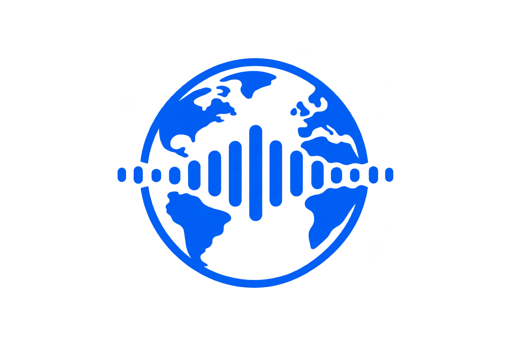
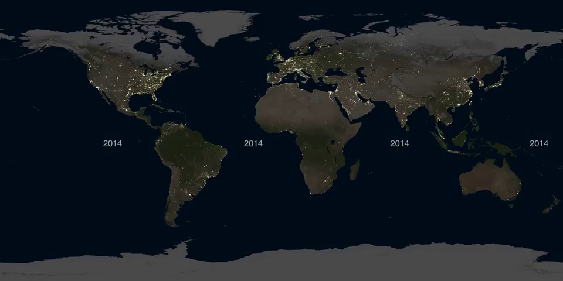

EARTH RADIOChoose a place
Select a station from the globe or list to begin.
TRACK 01 / 03
Pacific Glass
Visuals become sound
00:00 / 01:12
35%
AI host synthetic voice
NASA frames shape browser-made music. Tempo, scale, motifs and arrangement are composed.
Viewing: Ocean currents
Sound: Press Play to hear the station’s mix.
Press Play for locally generated sound. Source dates differ.
CURRENT VISUALNASA SVS
FOCUS · 50% / 50%IMAGE SAMPLE
00:00 / 00:00
STATION INTROGENERATED VOICE
This short ElevenLabs voice clip introduces the station once per listening session. It is synthetic narration, not a local recording or a NASA audio source. Skip or mute it at any time.
NASA VISUAL SOURCESDIFFERENT DATES
Choose a view to inspect. Sound-only inputs are listed separately; context films never generate sound. Mix controls change what you hear.
Image properties and interpretation notes
IMAGE PROPERTIESNOT MEASUREMENTS
Colour contrast—
Visual change—
The sound translates displayed pixels, not physical measurements.
The globe displays one selected NASA flat-map frame at a time; the plain-Earth icon shows the base map. Globe colours are display-enhanced for visibility, especially faint night lights. The source window keeps the original NASA frame, and sound uses the original pixels. Perpetual Ocean 2, Black Marble, historical ISS lightning, and PM2.5 are equirectangular views; the older ocean, EIC night-light panel, and aerosol still are approximate drapes. All sources have independent historical timelines. Golden night-light points pulse with a synthesized kick, not measured changes in light. Moving-camera films remain in the source window because their pixels cannot be fixed to globe coordinates.
Synthesized percussion follows this station's visual textures.
Choose “Describe current frame” for a text summary.
Source, projection and processing details
View original at NASA SVS1 / 3
Choose a place
Drag the globe or open Explore to choose a listening point. Pins are curated regions, not sensors.

Choose A or B to begin. No sound plays until you choose.
One frozen frame, one instrument and the same clock. The image includes rendered map shading and labels; this is not a light-output measurement. Normal exploration uses animated sources.
ABOUT EARTH RADIO
A new way to notice Earth.
Listening provides another sensory route into visual patterns: try identifying which rendered window has more bright pixels. This could support exploration in classrooms or museums; educational and accessibility outcomes have not been validated.
Each place has three generated tracks that rotate automatically. Previous and Next switch tracks, and the song slider moves within the current composition without changing NASA video timelines. Every track combines tones and synthesized percussion shaped by the station’s NASA visual frames as they play.
Drag the globe to choose a station. It turns toward the selected region and uses the chosen NASA flat-map frame as its surface. The view icons switch among ocean, night-light, atmospheric, and lightning maps. Moving-camera films play in the source window beside the globe. Where night lights are selected, bright rendered pixels glow with the synthesized drum kick. Select the plain-Earth icon to hide the NASA globe overlay. The glow's timing is musical; NASA's visuals keep their own historical timelines.
The beat is a musical choice; rendered brightness, colour and change influence its accents and timbre. The audio is a creative reading of pixels, not a field recording, live sensor feed, or calibrated scientific measurement. The marker locations are editorial ways into global and regional visuals.
Short pre-generated ElevenLabs voices introduce each station once per session. Four neutral voices rotate across stations. They do not impersonate people from the mapped places, and no spoken audio is derived from NASA data. The player includes host mute, skip, replay, and a transcript.
Codex assisted development, design research and review; Claude independently reviewed an older version. ElevenLabs generated the bundled host narration. The browser synthesizes the music procedurally from NASA imagery; neither the imagery nor the music is generated by ElevenLabs. NASA does not endorse the project.
Keyboard access: use Tab to reach the station list and controls; arrow keys rotate the focused globe, and plus or minus zoom it. The searchable list offers the same stations as the pins.
Created for NASA Space Apps 2026’s Earth Information Jukebox challenge. NASA does not endorse this project.
DATA & CREDIT
The source material.
The player cites the NASA Scientific Visualization Studio source for every sound layer and context film. Animation, color scales, labels, and compression affect pixel readings and therefore the sound. The moving-camera context films are not separately sonified. Compare each source’s scientific context before interpreting what you hear.
Generated station narration: ElevenLabs. Voice clips are bundled with this non-commercial preview; no visitor text or audio is sent to ElevenLabs when listening.
Read the project README for media transformations, AI assistance, credits and interpretation limits.